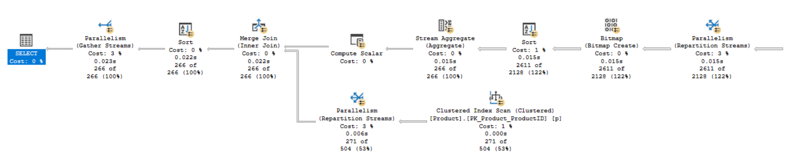
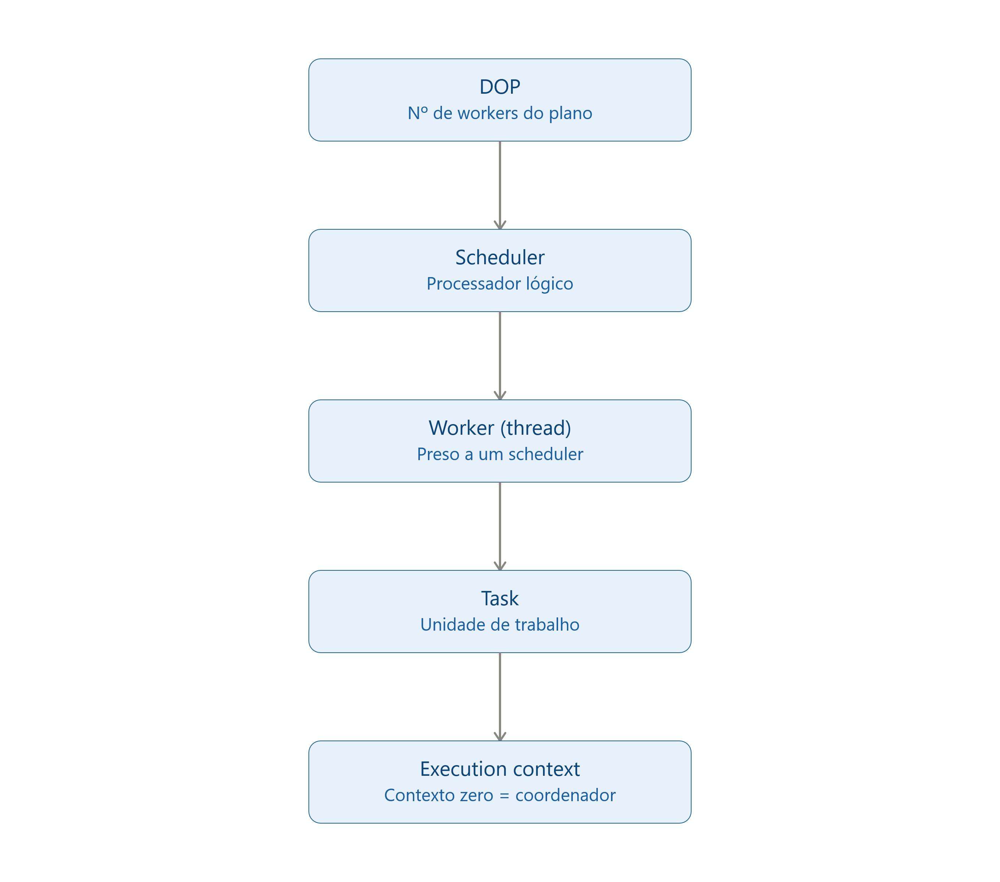
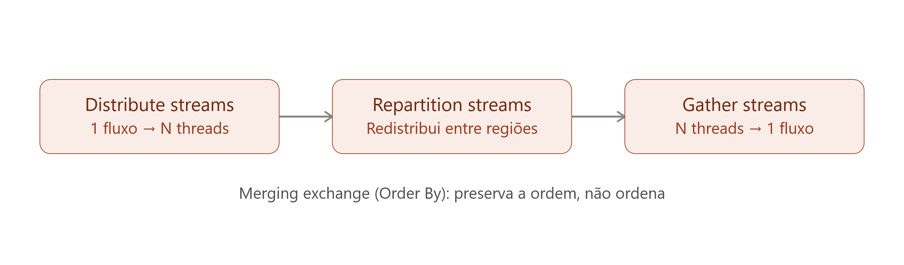
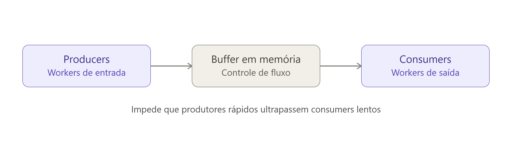
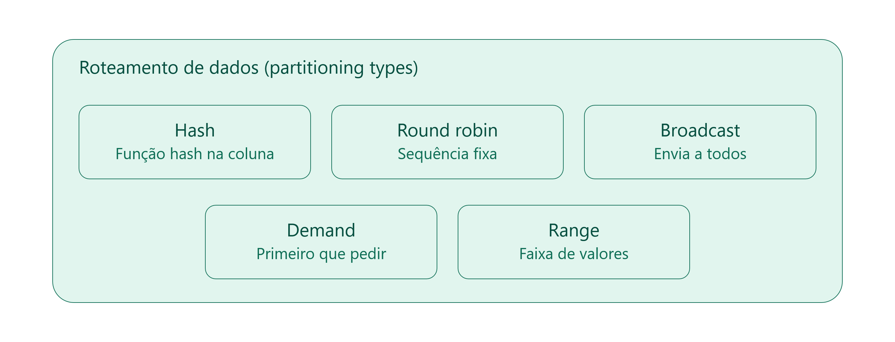
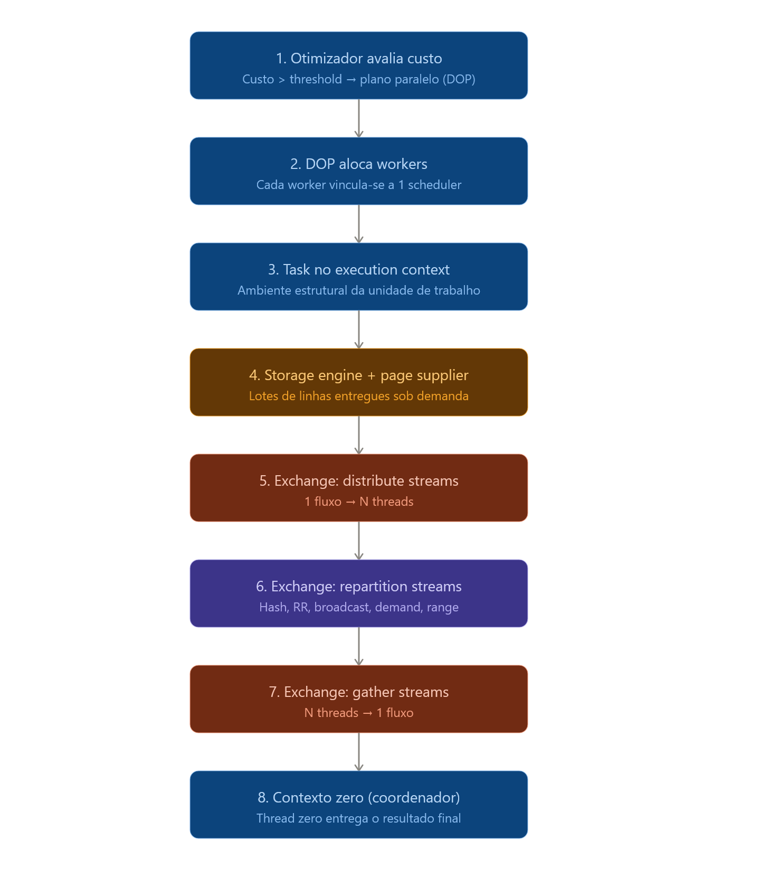

Paralelismo no SQL Server
Alguns veem isso como um assunto simples, outros nunca configuraram. Por falta domínio incompleto das técnicas necessárias para projetar e otimizar queries de forma eficaz. Este artigo disseca os fundamentos do paralelismo usando o SQL Server como base, introduzindo conceitos profundos como scans e seeks paralelos, workers, threads, tasks, contextos de execução e os coordenadores de atividade chamados Exchange Operators.
Sistemas frequentemente considerados como tendo carga de trabalho estritamente transacional (OLTP) contêm queries e procedures que poderiam se beneficiar enormemente do uso apropriado do paralelismo. Extrair o máximo desse recurso exige um entendimento profundo de como o agendamento, a otimização de queries e a engine de execução realmente funcionam.
1. O interno do Paralelismo
O conceito central do paralelismo é dividir uma tarefa entre um número de 'pessoas' (processadores) para que o tempo total exigido seja reduzido. Se você precisasse contar 3.027 balas em uma jarra a um ritmo de cinco por segundo, isso levaria mais de dez minutos. No entanto, se você e mais quatro amigos se sentarem ao redor de uma mesa, compartilhando uma única concha para pegar as balas sob demanda, a mesma tarefa pode ser concluída simultaneamente em cerca de dois minutos e meio. Esta tarefa é perfeita para o paralelismo, pois cada indivíduo é capaz de trabalhar de forma concorrente e independente.
No banco, em vez de contar balas, pedimos à engine para contar linhas em uma tabela. Para tabelas pequenas, o SQL Server utilizará um plano de execução serial, utilizando apenas um worker (thread). O operador Stream Aggregate contará as linhas recebidas do Index Scan. Mas, se a tabela for grande o suficiente, o otimizador escolherá alistar workers adicionais, criando um plano de execução paralelo.

O plano possui indicadores de paralelismo
Esses pequenos ícones de setas amarelas no plano identificam operações que envolvem múltiplos workers. Conceitualmente, a execução paralela funciona como o SQL Server executando múltiplos planos seriais de forma concorrente. O número de workers adicionais que o SQL Server designa em tempo de execução para cada região paralela é conhecido como Grau de Paralelismo (DOP - Degree of Parallelism), que é escolhido logo antes de a query iniciar e é determinado pelo número de unidades lógicas de processamento visíveis pelo banco.
2. Parallel Page Supplier: A Gestão Sob Demanda
O SQL Server não adota uma abordagem estática dividindo as linhas igualmente entre as threads, pois isso faria uma falsa suposição de que cada linha exige o mesmo esforço e que cada query recebe uma parcela igual de recursos.
Em vez disso, ele utiliza um recurso do Storage Engine chamado Parallel Page Supplier para distribuir as linhas entre os workers sob demanda.
- O Parallel Page Supplier responde às requisições entregando um lote de linhas para qualquer worker que precise de mais trabalho.
- Se um worker for lento, ele simplesmente fará menos solicitações e processará menos linhas, permitindo que os outros workers continuem operando em suas taxas máximas.
- Este esquema baseado em demanda garante resiliência contra variações na taxa de transferência dos workers, não limitando a performance ao nível do worker mais lento.
- Ele é acionado sempre que múltiplos workers leem de forma cooperativa uma estrutura de dados, seja um heap, uma tabela clusterizada ou um índice (atuando em operações de scan ou seek).
O Parallel Page Supplier entregando páginas sob demanda a partir do storage engine
3. Schedulers, Threads e Contextos de Execução
Para não precisar criar novas conexões separadas para cada query paralela, o motor orquestra a complexidade usando abstrações físicas e lógicas.
- Schedulers: Um scheduler representa um processador lógico, permitindo ao SQL Server controle preciso sobre seu próprio agendamento de threads, garantindo que apenas uma thread cooperativa seja executável por vez.
- Workers (Threads): Uma abstração que representa uma thread (ou fiber) do sistema operacional, que fica vinculada a um scheduler específico durante toda a sua vida útil.
- Tasks: Representam uma unidade de trabalho agendada pelo SQL Server a ser executada por um único worker.
- Execution Contexts (Contextos de Execução): É o ambiente estrutural onde a task ocorre. O SQL Server cria contextos de execução preenchendo detalhes no tempo de execução, como referências a tabelas temporárias e valores de variáveis. O contexto de execução principal, chamado de contexto zero, é processado pela thread zero, assumindo o papel especial de 'coordenador'.

A cadeia de abstrações do DOP até o contexto de execução
4. O Exchange Operator: A junção
O ingrediente final e mais vital em um plano paralelo é o Exchange Operator (Operador de Troca). Ele atua como a "cola" conectando os contextos de execução, sendo o único operador no plano que interage diretamente com mais de um worker.
Logicamente, o Exchange Operator aparece de três formas:
- Gather Streams: Consolida fluxos de múltiplas threads em uma.
- Distribute Streams: Pega um fluxo de entrada e o espalha para múltiplas threads.
- Repartition Streams: Redistribui linhas nas interfaces entre duas regiões paralelas.

As três formas lógicas do Exchange Operator
O Design Interno do Exchange
Fisicamente, este operador é sub-dividido em Producers (que se conectam aos workers de entrada, empacotando linhas em buffers na memória) e Consumers (que se conectam aos workers de saída, lendo as linhas desses buffers quando solicitados). O uso de buffers em memória implementa um controle de fluxo para impedir que produtores rápidos ultrapassem consumidores lentos.

Producers e Consumers conectados por buffers em memória
Roteamento de Dados (Partitioning Types)
Para determinar qual consumidor receberá cada linha, o Exchange utiliza cinco tipos de estratégias de particionamento:
- Hash: O consumidor é escolhido executando uma função de hash em um ou mais valores de colunas da linha.
- Round Robin: Cada nova linha é enviada ao próximo consumidor seguindo uma sequência fixa.
- Broadcast: Cada linha de entrada é enviada integralmente para todos os consumidores simultaneamente.
- Demand: A linha é enviada para o primeiro consumidor que a pedir.
- Range: Cada consumidor recebe uma faixa exclusiva e sem sobreposição de valores.

As cinco estratégias de roteamento de dados do Exchange
Preservação de Ordem: Operadores de troca também podem ser configurados para preservar a ordenação de entrada. Conhecidos como merging exchanges e identificados pelo atributo Order By, eles não realizam nenhuma ordenação física; eles são estritamente limitados a preservar a mesma ordem de classificação com a qual as linhas chegaram aos seus inputs.
Resumo do fluxo
Para que fixe melhor em sua mente e que não falte recursos para quando pensar em paralelismo:

Fluxo total
Dominar os bastidores da execução paralela significa abandonar o olhar superficial sobre o hardware. Através da intersecção de Exchange Operators e do Parallel Page Supplier, o SQL Server permite que consultas ganhem automaticamente as vantagens do processamento multi-core moderno, sem exigir que o desenvolvedor lide com o peso e as armadilhas de designs multithreaded complexos.